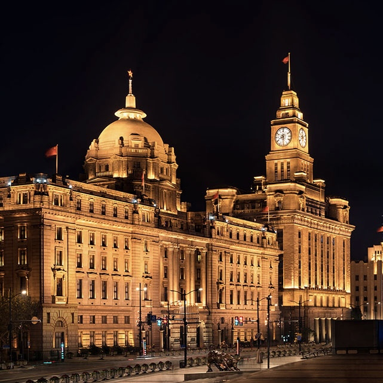
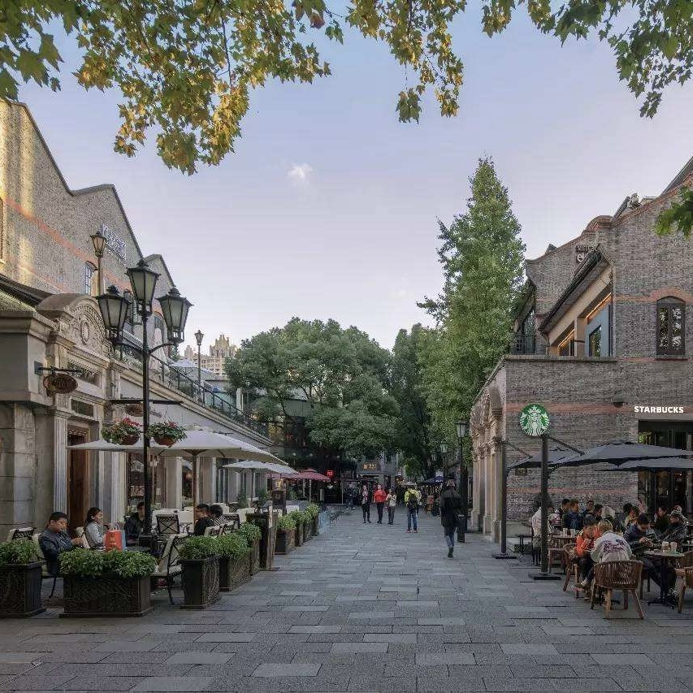
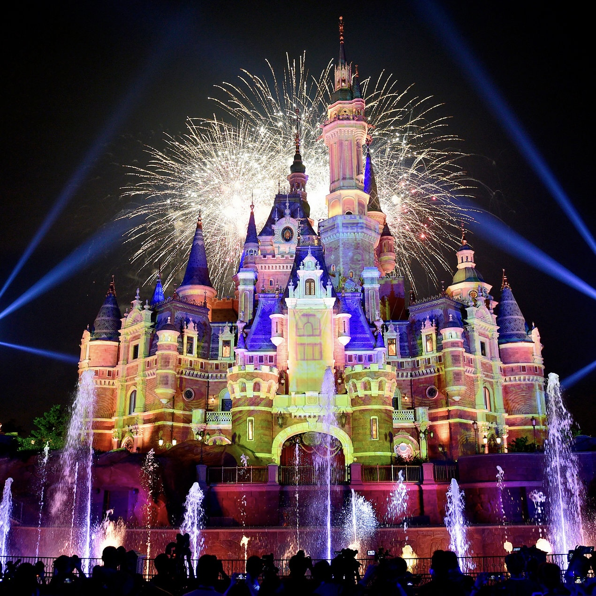
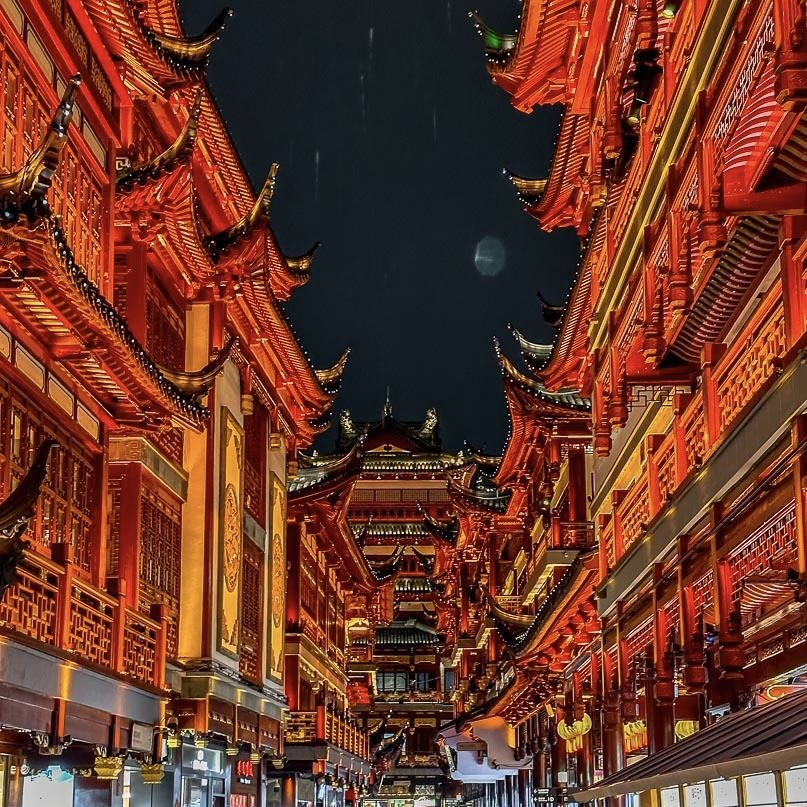
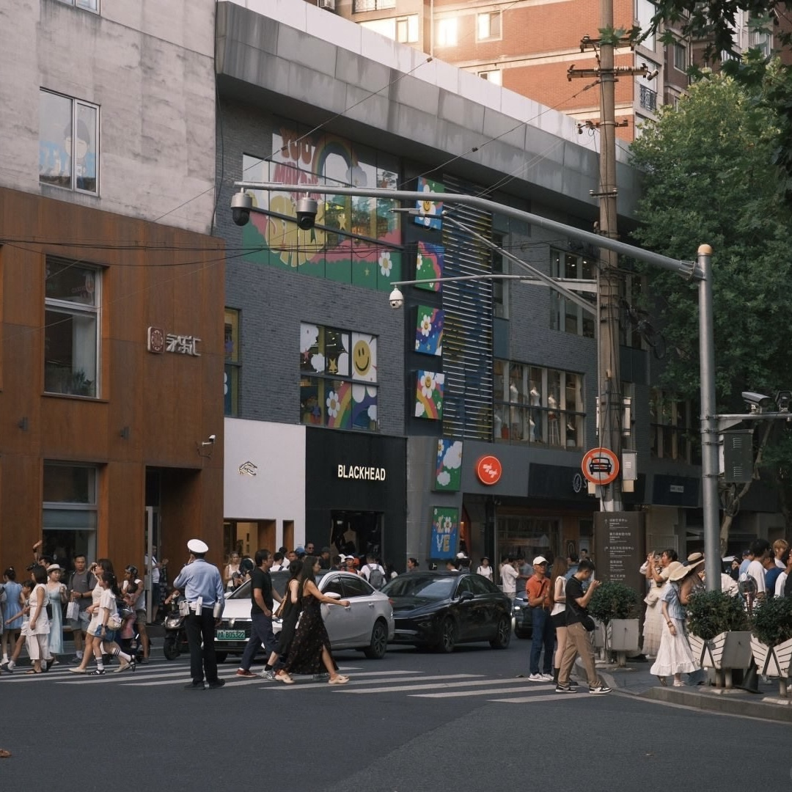

景区景点
Attractions
観光名所
สถานที่ท่องเที่ยว
以下是上海一些著名的景区景点，点击了解更多详情。
Here are some famous attractions in Shanghai. Click to learn more details.
これは上海の有名な観光名所です。詳細を学ぶためにクリックしてください。
นี่คือสถานที่ท่องเที่ยวที่มีชื่อเสียงในเซี่ยงไฮ้ คลิกเพื่อดูรายละเอียดเพิ่มเติม
外滩
The Bund
バンド通り
ถนนบันด์
外滩是上海的标志性景点，位于黄浦江畔，拥有众多风格各异的历史建筑，见证了上海的百年变迁。在这里可以欣赏到黄浦江两岸的壮丽景色。
The Bund is a landmark attraction in Shanghai, located along the Huangpu River. It has many historical buildings with different styles, witnessing the century - long changes in Shanghai. You can enjoy the magnificent scenery on both sides of the Huangpu River here.
バンド通りは上海のランドマークで、黄浦江沿いに位置しています。様々なスタイルの歴史的建物があり、上海の百年にわたる変遷を目撃しています。ここでは黄浦江の両岸の壮大な景色を楽しむことができます。
ถนนบันด์เป็นสถานที่ท่องเที่ยวที่มีชื่อเสียงในเซี่ยงไฮ้ ซึ่งตั้งอยู่ริมแม่น้ำห่วงโป๋ มีอาคารประวัติศาสตร์หลายแห่งที่มีรูปแบบต่างกัน สืบทอดการเปลี่ยนแปลงของเซี่ยงไฮ้เป็นเวลาหลายศตวรรษ คุณสามารถเพลิดเพลินกับวิวสวยของทั้งสองฝั่งของแม่น้ำห่วงโป๋ที่นี่
新天地
Xintiandi
新天地
ชินเตียนตี
新天地融合了传统石库门建筑与现代商业元素，是集购物、餐饮、娱乐为一体的时尚休闲街区，展现了上海的独特魅力。
Xintiandi combines traditional Shikumen architecture with modern commercial elements. It is a fashionable and leisure district integrating shopping, dining, and entertainment, showing the unique charm of Shanghai.
新天地は伝統的な石庫門建築と現代的な商業要素を融合させています。ショッピング、飲食、エンターテイメントを一体としたファッショナブルなレジャーエリアで、上海の独特な魅力を見せています。
ชินเตียนตีรวมถึงสถาปัตยกรรมสิกูเมนแบบดั้งเดิมและองค์ประกอบทางการค้าแบบสมัยใหม่ เป็นเขตพักผ่อนและสวมสไตล์ที่รวมการช้อปปิ้ง การกินขนม และความบันเทิงไว้ด้วยกันแสดงให้เห็นถึงความเสน่ห์เฉพาะของเซี่ยงไฮ้
迪士尼
Shanghai Disneyland
上海ディズニーランド
สวนสนุกเซี่ยงไฮ้ดิสนีย์แลนด์
上海迪士尼乐园是中国大陆首座迪士尼主题乐园，充满了欢乐和梦幻，有各种精彩的游乐设施和表演，适合全家游玩。
Shanghai Disneyland is the first Disney - themed park in mainland China. It is full of joy and fantasy, with various exciting rides and shows, suitable for the whole family.
上海ディズニーランドは中国本土で最初のディズニーテーマパークです。喜びと幻想に満ちており、さまざまな刺激的なアトラクションとショーがあり、家族全員に適しています。
สวนสนุกเซี่ยงไฮ้ดิสนีย์แลนด์เป็นสวนสนุกธีมดิสนีย์แห่งแรกในจีน ที่นี้เต็มไปด้วยความสุขและความฝัน มีอุปกรณ์สนุกและการแสดงต่างๆ ที่น่าตื่นเต้น เหมาะสำหรับทุกครอบครัว
豫园
Yuyuan Garden
豫園
สวนหยวน
豫园是上海著名的古典园林，具有浓厚的江南园林特色，园内亭台楼阁、假山池沼错落有致，尽显江南水乡的韵味。
Yuyuan Garden is a famous classical garden in Shanghai, with strong characteristics of southern Chinese gardens. There are pavilions, terraces, towers, artificial hills, and ponds in an orderly manner, showing the charm of the southern Chinese water towns.
豫園は上海の有名な古典的な庭園で、江南の庭園の特色が強いです。亭、台、楼、閣、假山、池沼が整然と並んでおり、江南の水郷の魅力を見せています。
สวนหยวนเป็นสวนคลาสสิกที่มีชื่อเสียงในเซี่ยงไฮ้ มีลักษณะเฉพาะของสวนจีนภาคใต้อย่างชัดเจน มีตึกสวย สระน้ำ และภูเขาประดิษฐ์อยู่ในลักษณะที่เป็นระเบียบ แสดงให้เห็นถึงความสวยงามของเมืองน้ำภาคใต้ของจีน
安福路
Anfu Road
安福路
ถนนอันฟู
安福路是上海一条文艺气息浓厚的街道，街道两旁有许多特色小店、咖啡馆和艺术工作室，是文艺青年的聚集地。
Anfu Road is a street full of artistic atmosphere in Shanghai. There are many characteristic small shops, cafes, and art studios on both sides of the street, making it a gathering place for young artists.
安福路は上海の芸術的な雰囲気に満ちた通りです。通りの両側には多くの特色ある小さな店舗、カフェ、アートスタジオがあり、若い芸術家たちの集まり場になっています。
ถนนอันฟูเป็นถนนที่เต็มไปด้วยบรรยากาศศิลปะในเซี่ยงไฮ้ มีร้านค้าขนาดเล็ก มีลักษณะพิเศษ คาเฟ่ และสตูดิโอศิลปะจำนวนมากอยู่ริมถนนทำให้เป็นสถานที่รวมตัวของผู้ชื่นชอบศิลปะ